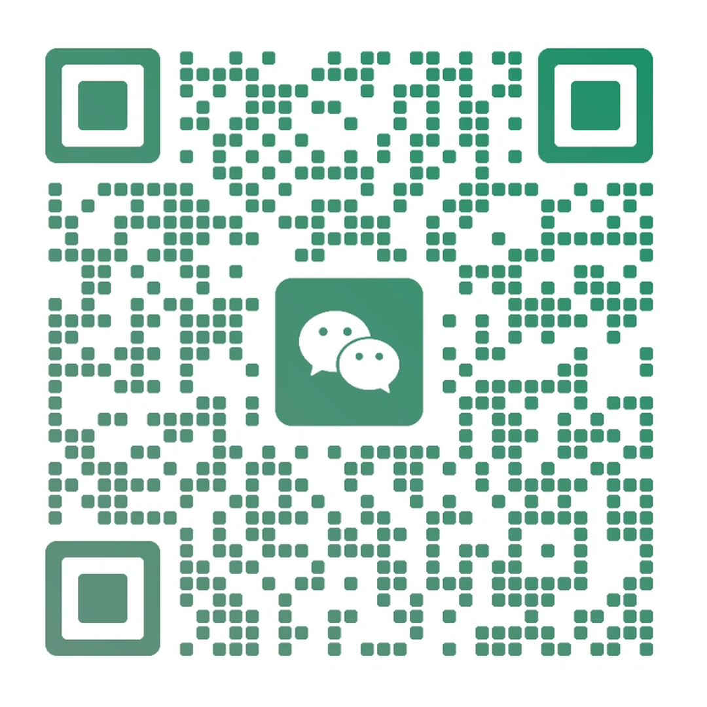

从通用插画、建筑室内、创意重构到电影调色，每一种风格都有独立编号、参考图、完整提示词与适用场景。直接报编号即可调用，支持多风格叠加。
From general illustration, architecture & interior, creative reconstruction to cinema color grading — each style has an independent ID, reference image, complete prompts and use cases. Just call the code number, multi-style stacking supported.
编号统一不带短横线：SK01、S01、C01、38
38 / SK01 / S04 / C01调用C01 / 调用SK2722+SK11 / C02+SK14watermark / logo / QR扫码访问网站

扫码加微信
本站所有风格参考图均为 AI 生成示意图，仅用于风格视觉参考，最终效果以实际 AI 生成结果为准。
提示词复制方式：点击任意风格卡片 → 右侧抽屉中「正向提示词」/「反向提示词」右上角「复制」按钮。
网址可直接转发他人，手机电脑均可使用。
风格数据下载：
标准JSON ·
SD WebUI JSON ·
SD WebUI CSV ·
纯文本TXT
总访问 --
·
访客 --
·
83 风格数据可下载